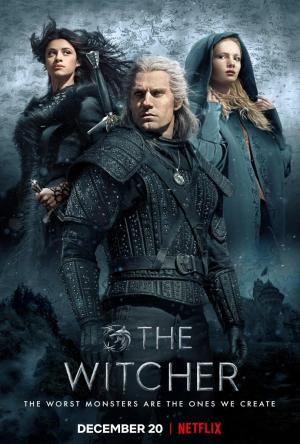

The Witcher |
||
|---|---|---|
|  | Sinopsis: Geralt de Rivia, un cazador de monstruos mutante, viaja en pos de su destino por un mundo turbulento en el que, a menudo, los humanos son peores que las bestias. Adaptación a la televisión de la saga literaria de Andrzej Sapkowski, que dio a su vez origen a una trilogía de prestigiosos videojuegos. |
Director:Lauren Schmidt Reparto:Henry Cavill, Freya Allan, Millie Brady Año: 2019 Duracion:60 min por capitulo Pais:Estados Unidos |
Criticas Profesionales:Andrew WebsterUna de las mejores series de Netflix (...) Es como un soplo de aire fresco en una época llena de historias de fantasía nihilistas inspiradas por 'Game of Thrones |
Trailer |
Obtener:AlquilarComprar |
Registrate/Iniciar Sesion